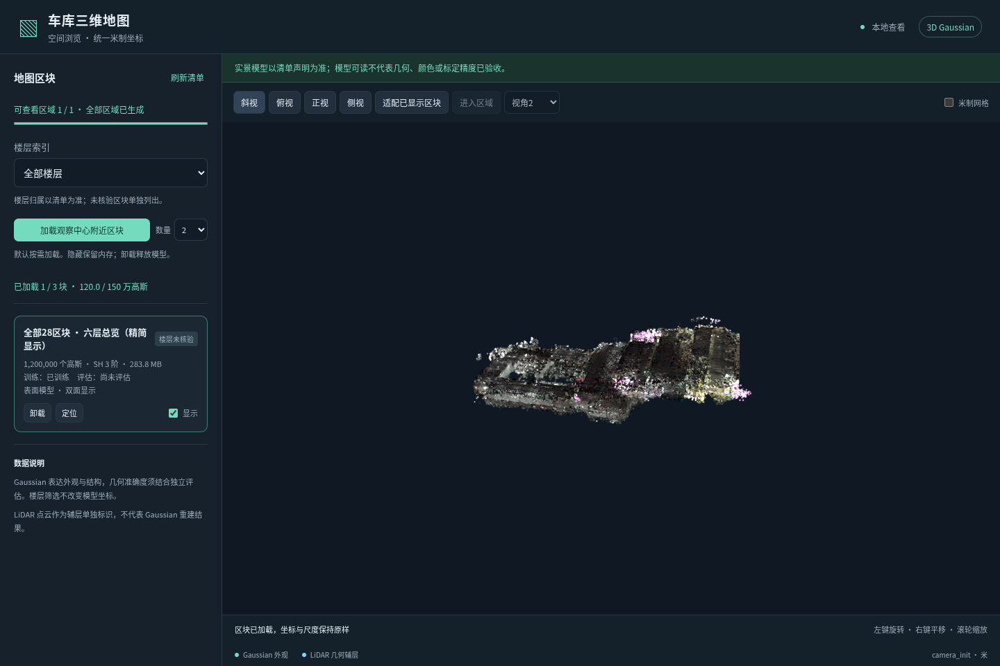

28原始区域覆盖
26实际模型资产
13,681,252完整拼接高斯
1,200,000真实抽样总览高斯
① 先看全场总览
从每份来源中分层抽取真实高斯，约120万点，覆盖所有来源。用于先看整场布局、上下层关系与各区域位置。
打开全场总览 →打开后点“加载”，再用“适配已显示区块”、俯视或侧视观察。总览经过精简，局部稀疏处应到详图核对。
② 按区域查看完整细节
按需加载26份原始资产。每份保留完整记录，选择楼层索引和对应区块，可进入已有区域参考视角。
打开原始分区详图 →F6可选择025／026／027历史块。更换000与joint015这类大模型前先“卸载”；隐藏仍占内存。
实际查看器验收通过：总览加载1,200,000点，F6历史块027加载235,743点。用户服务保持运行。

实际浏览器斜视截图。相机按完整模型范围适配，轮廓较小；打开查看器后可滚轮放大。查看实际侧视截图 · 查看F6历史块027的区域参考视角。截图用于确认加载与浏览，不能替代质量验收。
本次拼接用了哪些模型
| 原区域 | 实际使用来源 | 在详图中的组织方式 |
|---|
| 000 | 最新measuredseed＋切向尺度上限退火，15k实际训练模型 | 单资产；切向上限0.12m→0.03m，warm opacity cap恒为1.0 |
| 014／015／016 | joint015联合训练模型 | 由一份联合资产替换这三个历史来源，不重复放三份 |
| 其余24个区域 | 原有已训练模型 | 逐资产保留原数据，包含较高楼层的历史块 |
完整数据与总览不同。完整PLY包含所选26份资产的全部高斯，没有ownership裁剪、去重、颜色或尺度改写；因此来源之间原有重叠也会保留。总览采用真实分层抽样，没有保证极值点全部入样，实际采样包围盒可略内缩；查看相机按完整场景范围适配。楼层划分仍是暂定索引。
查看本轮最终模型的原生渲染对照图 · 成果保留与空间清理记录
下载完整拼接PLY（约3.16 GiB） · 来源与拼接记录 · 查看器验收说明
完整文件用于保存全部记录；浏览器优先使用精简总览与按需详图。本轮是快速查看工程交付，不能据此认定几何、颜色或六层重建已经验收。